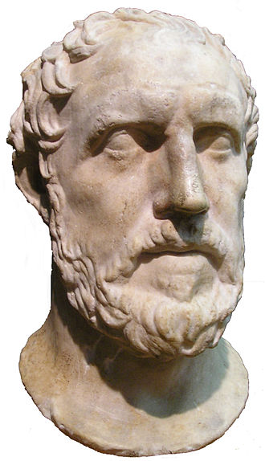
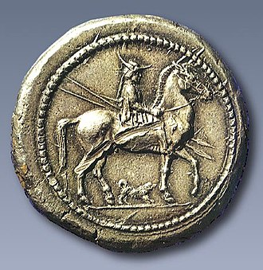
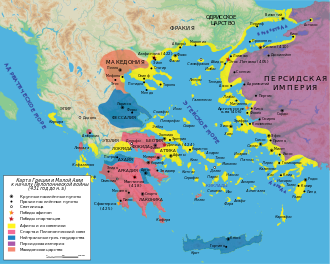

Источники
Наиболее важным и полным античным источником о Пердикке является «История» Фукидида.
Историк не только
являлся современником македонского царя Пердикки, но даже, возможно, посещал его наследника Архелая. Не
исключена возможность и личного знакомства между Фукидидом и Пердиккой. Однако античного историка не
интересовала личность самого Пердикки. Разрозненные упоминания о действиях македонского царя связаны с
главной линией повествования о ходе Пелопоннесской войны. За счёт таких особенностей изложения Фукидида,
учёные могут в деталях описать взаимоотношения Македонии и Афин. Однако они не обладают полной информацией о
внутренней политике Македонии, её взаимоотношениях с соседями, особенностях развития региона в данный
исторический промежуток[1].
Фукидид оценивал Пердикку в качестве одного из наиболее успешных мастеров «закулисной игры», тактиков и
стратегов, который умер в своей постели[2]. Античный историк не осуждает и не оправдывает политику
македонского царя. Возможно, он понимал, что таким образом Пердикке удалось сохранить свои позиции, находясь
«между двух огней»[3].
Кроме Фукидида, разрозненная информация о Пердикке встречается у афинских комедиографов. В комедии Гермиппа
«Несущие корзины» (др.-греч. Φορμοφόροι) драматург иронизирует над македонским царём, который шлёт в Афины
целые корабли лживых обещаний[4]. Македонского царя упоминают Платон, афинские ораторы Демосфен и Лисий.
Среди прочего Пердикке приписали циничную фразу о том, что «справедливость состоит в том, чтобы приносить
пользу друзьям и причинять вред врагам»[5]. Из позднеантичных авторов о Пердикке писал Марк Юниан Юстин в
«Эпитоме сочинения Помпея Трога „Historiarum Philippicarum“»[6]. Для данных источников характерен образ
«коварного» и бесчестного царя, возникший как вследствие частых нарушений Пердиккой союзных договоров, так и
антимакедонской афинской пропаганды[7].
Кроме письменных источников важные сведения о жизни и периоде царствования Пердикки содержатся в
эпиграфике. Данные нумизматики позволяют делать косвенные выводы о внутренней политике Пердикки и торговых
связях Македонии в описываемый период[8].

Биография
Происхождение. Борьба за власть
Пердикка происходил из македонской царской династии Аргеадов, представители которой возводили своё
генеалогическое древо к Гераклу. Пердикка был сыном царя Александра I, который правил Македонией более 40
лет. Незадолго до своей смерти Александр поручил власть над отдельными частями страны трём своим сыновьям —
Пердикке, Алкету и Филиппу. Возможно, поступок Александра по распределению областей между сыновьями
свидетельствует о разногласиях в семье македонского царя. Историк Н. Хаммонд считал, что разделение
Македонии между братьями состоялось не при Александре, а непосредственно после его смерти решением Народного
собрания[9]. В историографии существует как минимум две версии о том, был ли Пердикка назначен официальным
преемником. Историк А. С. Шофман утверждал, что Александр перед смертью отдал верховную власть именно
Пердикке. Другой историк Ю. Борза отмечал, что для таких выводов нет никаких оснований[10][11]. Также
остаётся неопределённым старшинство братьев. В описываемое время в Македонии право первородства не было
определяющим при наследовании царского престола. Соответственно, старшим сыном Александра мог быть как
ставший царём Пердикка[10], так и любой из перечисленных царевичей[9][12][13].
После смерти Александра между македонскими царевичами возникло соперничество за царский престол. Его детали
неизвестны. Предположительно, Алкет уступил власть Пердикке мирным путём. Согласно данным эпиграфики, в
420-х годах до н. э. Алкет был вторым по значимости после царя человеком в Македонии[11]. В договоре между
Афинами и Македонией 423/422 года до н. э. приведён список знатных македонян. Первым в нём указан царь
Пердикка, вторым — Алкет, третьим — сын и наследник Пердикки Архелай[14]. В диалоге Платона «Горгий»
говорится, что Пердикка отобрал власть у своего брата Алкета[15].
В отличие от Алкета, соперничество с Филиппом, которому отец отдал в управление важные в стратегическом
плане земли в области реки Аксия — Амфакситиду, вылилось в вооружённое противостояние в 440—430-х годах до
н. э.[11] В конечном итоге Пердикка отобрал владения брата, который был вынужден бежать ко двору правителя
Элимеи Дерды I[16].

Сложность в определении даты смерти Александра предполагает невозможность установить точный год воцарения
Пердикки. Древнегреческий писатель II—III веков Афиней приводит свидетельства шести античных историков, в
трудах которых содержатся пять различных версий о длительности царствования Пердикки: «Пердикка,
процарствовавший, согласно Аканфию Никомедийскому, сорок один год, по Феопомпу — тридцать пять
лет, по Анаксимену — сорок, по Иерониму — двадцать пять, по Марсию и Филохору — двадцать три
года»[17]. Подобная неразбериха присутствует и в других источниках. Диодор Сицилийский определяет время
правления Пердикки в 22 года[18]. В Паросской хронике указано, что Пердикка стал царём после смерти
Александра во время архонтства Эвтиппа, то есть в 461—460 году до н. э., а умер во время архонтства Астифила
(420—419 годы до н. э.)[19]. По всей видимости, историки, приводящие меньшее количество лет царствования
Пердикки (около 20—25), считают лишь годы его единоличного правления, а большее (около 35—40) — считают
промежуток от смерти Александра до смерти Пердикки. Историк Ю. Борза предлагает определять срок царствования
Пердикки II 454—413 годами до н. э.[20]
Взаимоотношения с Афинами в начале царствования
Во время царствования Пердикки одной из наиболее влиятельных сил в регионе был подконтрольный Афинам
Делосский морской союз. Экспансионистская политика афинян привела к включению в состав морского союза
полисов Стрепса, Серме[en], Аргил, Брея[en], Эйон[en], находившихся в непосредственной близости от владений
македонских царей[21]. Около 451 года до н. э. Перикл отправил в Бисалтию тысячу поселенцев, которые, по
всей видимости, основали поселение Берга[en] на Стримоне[22][23]. На македонских территориях афиняне и их
союзники добывали корабельный лес и смолу, необходимые для поддержания афинского флота, заселяли плодородные
земли и занимались поиском полезных ископаемых[21].
Основание колоний на побережье Македонии и экспансионистская политика Афин не отвечали интересам
Пердикки[24]. Однако на первых порах македонский царь не выказывал, во всяком случае внешне, недовольство
афинской колонизационной политикой. Быстрота, с которой афиняне заселили восточные рубежи владений Пердикки,
свидетельствует о слабости македонского царя[25][26]. Поэтому Пердикка, на первых порах, старался избежать
открытого вооружённого противостояния. Он использовал возможности получить максимальную выгоду от соседства
с полисами Афинского морского союза. Возможно, афиняне помогли Пердикке во время междоусобной войны с
Филиппом. Согласно афинскому оратору и государственному деятелю IV века до н. э. Демосфену Македония при
Пердикке платила Афинам дань[27][28]. Насколько это соответствует действительности, а если такие выплаты и
были, то в какие годы и в какой сумме, остаётся неясным[16].

Карта Греции с указанием основных союзов на начало Пелопоннесской войны (431 год до н. э.)
В 446 или 445 году до н. э. во время подавления восстания на Эвбее Перикл захватил Гестиею. Он решил
выселить население города в Македонию, заселив его афинянами. Представляется само собой разумеющимся
согласие Пердикки принять в число своих подданных гестиейских изгнанников, что свидетельствует о
существовании между Афинами и Македонией дипломатических отношений[29].
В 437/436 году до н. э. афиняне основали чрезвычайно важный в стратегическом плане полис Амфиполь. Ещё отец
Пердикки Александр занимал стратегически важную переправу в месте «Девяти путей», недалеко от будущего
Амфиполя, однако не смог её удержать. Через какое-то время область захватили эдоны[30]. В источниках
отсутствуют сведения о реакции Пердикки на основание Амфиполя. Историк Р. Хофман предположил, что
македонский царь был в ярости. Однако всё, что он смог сделать, был отказ от чеканки монет по аттическим
весовым стандартам[29].
Политика Афин угрожала интересам Македонии и Пердикки. Контроль Делосского морского союза над Стримоном
лишал Македонию покупателей корабельного леса[31]. Под угрозой оказывались и серебряные рудники Бисалтии —
один из главных источников серебра для македонского царя[31]. Долгое время Пердикка был вынужден лишь
наблюдать за экспансией Афин. На каком-то этапе Афины решили вмешаться в династические междоусобицы
македонских царей, как с целью устранения угрозы со стороны Македонии своим колониям, так и для получения
беспрепятственного и неограниченного доступа к строевому лесу и другим ресурсам. Для этого они заключили
союз с врагами Пердикки — претендентом на македонский престол Филиппом и царём Элимеи Дердой[32]. Со своей
стороны македонский царь сделал всё возможное, чтобы вовлечь в конфликт с Афинами другие народы и державы
региона. Пердикка отправил послов в Спарту и Коринф. Тем самым он стремился ускорить начало войны между
Афинским и Пелопоннесским союзами. Одновременно он стал убеждать жителей городов Халкидики выступить против
Афин. Он предлагал им на время войны переселиться в Олинф либо в область озера Болба в Мигдонии[33][34].
Точная дата разрыва отношений между Пердиккой и Афинами неизвестна. К 432 году до н. э. обе державы уже были
в состояния конфликта[35].
Начало войны с Афинами. Роль Пердикки в конфликте вокруг Потидеи
Основная статья: Осада Потидеи
В 432 году до н. э. Афины отправили в Македонию против Пердикки 1000 гоплитов на 30 кораблях под
командованием Архестрата[en]. Также стратегу следовало помочь претенденту на македонский престол Филиппу.
Одной из задач Архестрата было вынудить жителей Потидеи срыть городские стены, а также взять оттуда
заложников. Ещё до того, как афинские войска прибыли в Македонию, в Потидее началось восстание[36]. Этот
древнегреческий город на Халкидиках был основан коринфянами. В V веке до н. э. Потидея входила в состав
Афинского морского союза, однако её жители не утратили связь с метрополией. В частности, Коринф ежегодно
отправлял в Потидею уполномоченных магистратов — эпидемиургов. По мере роста афинских амбиций отношения
между Коринфом и Афинами ухудшились, а к 433 году до н. э. ситуация резко осложнилась вследствие участия
афинских кораблей в битве при Сиботских островах на стороне керкирян против коринфского флота. Опасаясь, что
жители Потидеи могут восстать против власти Афин и склонить к тому же другие города северного побережья
Эгейского моря, афиняне приказали потидейцам снести южную часть городской стены, выдать заложников и не
принимать коринфских эпидемиургов[37][38]. Потидейцы сначала стремились уладить конфликт мирным путём.
Внешнеполитическая ситуация складывалась для них благоприятно. Спартанцы заверили горожан, что после
нападения афинян на Потидею они вторгнутся в Аттику. Заключив союз с халкидикийцами и племенем боттиев[en],
Потидея решились отпасть от Афин[39][38].
Афинский стратег решил не вести войну на два фронта, а сосредоточиться на действиях против Пердикки.
Одновременно из Элимеи в Македонию вторглись войска во главе с близкими родственниками царя Дерды и
свергнутым братом Пердикки Филиппом[40][38]. Объединённое войско захватило прибрежную Ферму, тем самым
отрезая владения Пердикки от мятежных Халкидиков. Македонский царь, в свою очередь, убедил часть
халкидикийцев переселиться в окрестности озера Болба вглубь Македонии, а также занять позиции вокруг
укреплённого Олинфа[41].
Карта Халкидики с указанием основных античных полисов
После взятия Фермы афиняне, к которым на помощь прибыло ещё 2000 гоплитов на 40 кораблях под командованием
стратега Каллия, сына Каллиада[42], осадили Пидну. Взятие этого города угрожало Пердикке потерей всей
прибрежной части Македонии Пиерии. Также, на расстоянии всего нескольких часов пути от Пидны находилась
столица Эги. В это время к Потидее пришло войско коринфян в 1600 гоплитов и 400 легковооружённых воинов под
командованием Аристея, сына Адиманта[en]. Прибытие пелопоннесцев заставило афинян снять осаду с Пидны,
заключить мирное соглашение с Пердиккой и отправиться к Потидее[43][41]. Возможно, частью заключённого
соглашения стало присоединение подконтрольной Пердикке Мефоны к Афинскому морскому союзу[44]. Дата перехода
Мефоны под контроль Афин дискутабельна. Несомненным является её важное стратегическое значение. Мефона была
не только прибрежным торговым полисом, но и стратегически важным укреплением, обладая которым, афиняне могли
угрожать главному морскому порту Македонии Пидне и столице Эгам[45].
Пердикка недолго придерживался мирных обязательств относительно афинян. Он пришёл на помощь Потидее ещё до
того как войска Архестрата подошли к городу. Возможно, первыми нарушили условия перемирия именно афиняне,
напав по пути на македонские города[46]. Аристей занял позиции на перешейке Палленского полуострова и стал
дожидаться противника. Пердикке он поручил расположиться в Олинфе. По замыслу коринфского стратега, во время
нападения афинян македонские войска должны были ударить им в тыл. Чтобы не допустить такого развития
событий, Каллий отправил союзную ему часть македонской конницы под командованием Филиппа сдерживать
возможное наступление Пердикки. В последующем сражении афиняне победили коринфян и потидейцев, а македоняне
в сражении не участвовали[47][43][43].
Война с Ситалком
После захвата афинянами Потидеи Пердикка оказался в затруднительном положении. Его владения оказались
открытыми для нападения афинян с моря, а элимиотов — с суши. Также на северо-востоке от Македонии приобрело
силу Одрисское царство во главе с Ситалком, с которым афиняне нашли способ заключить союз. В этих условиях
Пердикка с помощью фаворита и зятя Ситалка Нимфодора вошёл в состав Афинского морского союза. Взамен, по
одной из версий, македонский царь получил обратно Ферму, которую афиняне захватили в ходе потидейской
кампании. Македонский царь даже присоединился к походу стратега Формиона против халкидикийцев, которых до
этого склонил выйти из состава Афинского морского союза. Заручившись поддержкой Ситалка и включив в состав
союза Македонию, афиняне на время упрочили своё положение на северном побережья Эгейского моря. Вскоре
оказалось, что Пердикка, внешне оставаясь союзником Афин, на самом деле поддерживает коринфян и плетёт новые
заговоры[48][49].
Ситалк способствовал примирению между Афинами и Македонией. Он согласился поддержать Пердикку в
противостоянии с его братом Филиппом, даже несмотря на то, что последний после конфликта вокруг Потидеи
бежал к его двору. Что обещал Пердикка за содействие Ситалку, неизвестно. Однако, согласно Фукидиду, в 429
году до н. э. 150 тысяч фракийцев[50] (Диодор Сицилийский оценивал их численность в 120 тысяч пехоты и 50
тысяч конницы[51]) вторглись в Македонию, так как Ситалк хотел «добиться исполнения обещанного ему»[52].
Оценки численности фракийского войска могут показаться преувеличенными, однако они свидетельствуют о явном
численном преимуществе над македонянами[53]. Возможно, начать войну Ситалка убедили афиняне[54]. Незадолго
до вторжения Ситалка Пердикка отправил в Акарнанию 1000 солдат на помощь повстанцам против Афин. Возможной
целью Пердикки было показать спартанцам, что в Македонию можно отправлять войска в обход Фессалии через
Коринфский залив и Эпир[55].
При фракийском военачальнике находился племянник Пердикки — сын Филиппа Аминта, которого Ситалк предполагал
сделать македонским царём[52][56]. Македонские войска не решились дать бой Ситалку. Они заняли укрепления и
выбрали партизанскую тактику ведения войны, нападая на неприятеля везде, где представлялся удобный случай.
Войска Ситалка вторглись в Македонию в области русла реки Аксия[57], затем повернули на восток и разграбили
Анфемунт, Мигдонию и Крестонию[en], а также захватили ряд населённых пунктов[58][54][59]. Остаётся неясным,
почему Ситалк не направил своё войско на запад к наиболее крупным городам Македонии Пелле и Эгам[60].
Несмотря на преимущество в численности и ряд военных успехов, войско Ситалка через месяц было вынуждено
вернуться домой. Историки выделяют три возможных причины таких действий одрисского царя. Во-первых, афиняне
не выполнили своих обязательств и не прислали на помощь Ситалку свой флот. Во-вторых, громадная армия
испытывала недостаток в провизии и страдала от холода. В-третьих, Пердикка смог привлечь на свою сторону
племянника Ситалка Севта, которому пообещал в жёны свою сестру Стратонику и богатое приданое[61]. Возможно и
сочетание нескольких из перечисленных факторов. У афинян могло быть несколько причин не оказать помощь
Ситалку — задержка кораблей на основном театре Пелопоннесской войны, а также боязнь чрезмерного усиления
Одрисского царства[59].
В результате этой войны положение Пердикки только упрочилось. Он смог примириться с Одрисским царством, и
это позволило македонянам, на фоне Пелопоннесской войны между основными греческими государствами, направить
свои силы на расширение собственной территории[62]. Между Афинами и Пердиккой была заключена договорённость,
по которой обе стороны не вмешивались в дела друг друга, в том числе прибрежных полисов Афинского морского
союза на территории Македонии. Хотя такое положение вещей и не устраивало Пердикку, оно позволило ему
заняться внутренними делами[63].
Союз со Спартой. Война с Линкестидой
Около 424 года до н. э. у Пердикки возник конфликт с царём верхнемакедонской области Линкестида Аррабеем, о
деталях которого ничего не известно. Пердикка постарался привлечь к решению собственной внутримакедонской
проблемы спартанцев. После поражений при Пилосе и на Сфактерии они решили изменить стратегию ведения военных
действий против Афин. Пердикка убедил спартанцев отправить армию в Македонию, которая нанесла бы удар по
подвластным Афинам городам. Спарта решила направить на помощь халкидикийцам и Пердикке войско с одним из
наиболее выдающихся спартанских военачальников Брасидом. На Македонию было возложено частичное
финансирование экспедиции[64][65].
Натянутые отношения между спартанским полководцем и македонским царём возникли практически сразу после
прибытия Брасида в Македонию. Пердикка потребовал от Брасида выступить против правителя Линкестиды в Верхней
Македонии Аррабея. Спартанский военачальник, армия которого частично состояла из наёмников, с одной стороны
зависел от выплат Пердикки, а с другой — не хотел становиться лишь исполнителем приказов македонского царя.
Во время похода он, несмотря на противодействие Пердикки, начал переговоры с Аррабеем. Согласно Фукидиду,
убеждённый доводами последнего, Брасид отказался вторгаться в земли линкестов[66][67].
Фукидид пишет, что, несмотря на демарш Брасида, Пердикка лишь сократил содержание спартанской армии. С чем
были связаны такие действия Пердикки, неизвестно. Возможно, он рассчитывал использовать спартанцев в
будущем, либо считал достигнутые Брасидом договорённости с Аррабеем приемлемыми для македонян. Следующие
несколько месяцев спартанцы были заняты теми военными действиями, которые отвечали их интересам в
противостоянии с Афинами. Затаив обиду на Брасида, который не стал выполнять его указания, Пердикка
продолжал оставаться в союзе со спартанцами. После первого инцидента, связанного с Аррабеем, обе стороны
стали относиться друг к другу настороженно[68].
К зиме 424/423 года до н. э. Брасид смог захватить Амфиполь. Потеря стратегически важного города вызвала
тревогу в Афинах, так как усложняла им доступ к жизненно необходимому корабельному лесу, грозила потерей
всего региона. Они стали готовить армию для войны с Брасидом. На этом фоне в Амфиполь прибыл Пердикка. Ему
удалось убедить спартанского военачальника вновь выступить в поход против Аррабея в Западную Македонию. Эта
экспедиция не отвечала интересам Спарты. По всей видимости, Брасид был вынужден присоединиться к походу под
угрозой прекращения снабжения его армии со стороны Пердикки. Начало похода было успешным. Объединённой
спартанско-македонской армии удалось разбить Аррабея. Однако, после того как на сторону линкестов перешли
иллирийцы, а между Пердиккой и Брасидом возникли разногласия, македоняне бежали. Брасид со своим войском был
вынужден пробиваться в Нижнюю Македонию. Злость спартанцев за вероломство Пердикки проявилась в разграблении
обоза его армии[69][70].
После провала попытки завоевания Линкестиды союз с Брасидом потерял для Пердикки какую-либо
привлекательность. Более того, Пердикке было невыгодно потерять афинский рынок сбыта для македонской
древесины. Своенравный характер спартанского военачальника, которого в первую очередь интересовала лишь
война с Афинами, также способствовал переговорам между Пердиккой и Афинами[71]. Между Афинами и Македонией
был заключён союзный договор. В результате положение Брасида стало крайне опасным. Пердикка использовал всё
своё влияние в Фессалии, чтобы не пропустить подкрепление спартанцев к Брасиду[72]. Победоносная кампания
424—423 годов до н. э. завершилась, и спартанцы были вынуждены перейти к обороне в занятых ими городах
северного побережья Эгейского моря. В 422 году до н. э. стратегом в Афинах был избран Клеон. Новый
военачальник приступил к решительным действиям и прибыл в Халкидику с флотом из 30 кораблей. Клеон даже
запросил у Пердикки, согласно договору, подкреплений[73], которых македонский царь ему так и не предоставил.
В битве при Амфиполе погибли оба военачальника — Клеон и Брасид. В 421 году до н. э. Афины и Спарта
заключили т. н. Никиев мир, который по факту был лишь временным перемирием[74][75]. Спартанцы, вопреки
своему желанию, помогли Пердикке, ослабив позиции афинян на фракийском побережье. Перемирие 421 года до н.
э. не восстановило могущества афинян, что также было выгодно для Македонии[76].
После Никиева мира
После заключения временного перемирия между Афинами и Спартой Пердикка несколько лет оставался в стороне от
общегреческих событий. Амфиполь, несмотря на условия Никиева мира, отверг подчинение Афинам и стал
независимым. Местные раздоры на Халкидиках никак не угрожали власти македонского царя. Ситуация изменилась в
417 году до н. э., когда Пердикка присоединился к союзу Спарты и Аргоса. Что именно побудило македонского
царя к таким действиям, неизвестно. Возможно, у него возникли планы относительно того, как использовать
противостояние двух основных сил в Эгейском море для усиления собственной власти. Как бы то ни было, такое
решение Пердикки лишило афинян союзника в регионе и они были вынуждены отказаться от похода на
Халкидики[77][78].
Зимой 417/416 года до н. э. Афины начали морскую блокаду побережья Македонии. На следующий год они даже
высадили экспедиционный корпус в Мефоне, который разорял близлежащие македонские земли[79][78].
Спартанцы никак не могли, хоть и хотели, помочь Пердикке в его противостоянии с афинянами. В 414 году до н.
э. Пердикке удалось вновь заключить союз с Афинами. Он даже участвовал вместе с афинским стратегом Эветионом
в безуспешной осаде Амфиполя[80][81]. Далее о жизни Пердикки ничего не известно. Большинство историков
считают, что он умер в 413 году до н. э., оставив трон сыну Архелаю[82][83].
Семья
Из всех детей Александра I Македонского при дворе Пердикки находилась лишь Стратоника. Пердикка выдал сестру
замуж за племянника Ситалка Севта, который впоследствии унаследовал власть в Одрисском царстве. Историки
подчёркивают, что у Ситалка был сын и наследник Садок. Каким образом власть перешла к Севту, неизвестно. Не
исключено, что Пердикка помог зятю занять престол и каким-то образом был связан с убийством Ситалка[84]. У
Севта и Стратоники не было детей, во всяком случае историкам о них ничего не известно. Это стало одной из
причин разделения Одрисского царства на три части после смерти Севта[85].
У Пердикки было по меньшей мере два сына от двух женщин. Старший Архелай захватил власть после смерти отца.
Согласно античным источникам его матерью была рабыня Симиха. Возможно, речь идёт о зафиксированной в
источниках афинской пропаганде, направленной против Архелая. Большинство историков считают Симиху
представительницей македонской знати и первой женой Пердикки. В противном случае Архелай занял бы положение
бастарда, а не наиболее влиятельного македонского аристократа. Брак Пердикки с Симихой был политическим.
Согласно данным эпиграфики, а именно македоно-афинского договора 423/422 годов до н. э., Архелай являлся
одним из наиболее влиятельных лиц в Македонии, что свидетельствует о том, что Пердикка женился на Симихе не
позднее начала 440-х годов до н. э. Согласно античным источникам, второй женой Пердикки была Клеопатра. Не
исключено, что у царя было одновременно две жены, так как в Македонии существовала полигамия. Сын Клеопатры
на момент смерти Пердикки был семилетним ребёнком. Согласно Платону, Архелай приказал утопить брата в
колодце. Смерть мальчика была списана на несчастный случай. Аристотель сообщает, что после устранения
претендентов на престол Архелай взял Клеопатру в жёны. Насколько эта история достоверна, неизвестно.
Историки, учитывая распространённость имени в Македонии того времени, считают, что если у Архелая и была
жена Клеопатра, то речь идёт не о жене Пердикки, а о другой женщине[86][87].
Внутренняя политика
Пердикка стремился приобщить Македонию к греческой культуре. Македонский царь приглашал к своему двору
знаменитых людей, среди которых можно выделить поэта Меланиппида[88] и врача Гиппократа[89]. Пердикка
принимал при своём дворе «отца истории» Геродота во время его путешествий по Македонии. Историк часто
посещал страну, когда собирал материал о греко-персидских войнах и общался с очевидцами тех событий. Геродот
привёл много лестных историй об отце Пердикки Александре, что свидетельствует о его дружественных
взаимоотношениях с македонским царским домом[90]. Также Пердикка способствовал переселению на территорию
Македонии изгнанных афинянами из родного города на Эвбее гестиейцев, а также вынужденных переселенцев из
халкидикийских полисов[89].
С Пердиккой связана одна из легенд о Гиппократе, первоисточником которой является биография «отца медицины»
Сорана Эфесского. Гиппократ не только определил психогенный характер заболевания македонского царя, но и
нашёл его причину — неразделённую любовь к наложнице своего покойного отца Филе[91].
О внутренней политике Пердикки косвенно свидетельствуют данные нумизматики. В отличие от отца, Пердикка не
чеканил высококачественные в художественном отношении полновесные октодрахмы. Помимо экономической функции
надёжного платёжного средства, мастерски выполненные монеты свидетельствуют о богатстве и силе
правителя[92]. Максимальный номинал монет, которые чеканили при Пердикке, составлял четыре обола. Также
обращает на себя внимание нерегулярность чеканки. На основании анализа монет Пердикки историк Н. Хаммонд
делает вывод, что македонский царь часто испытывал нужду в деньгах, а также периодически терял контроль над
серебряными рудниками в Бисалтии. Также, данные нумизматики свидетельствуют о существовании двух основных
направлений торговли Македонского царства — с Афинами и фракийскими племенами. Для каждого из них чеканили
монеты разных весовых стандартов[93].
Оценки правления Пердикки II в историографии
Историк В. П. Бузескул назвал Пердикку «прототипом Филиппа II Македонского», поскольку их сближали сходство
характеров и политических методов[95]. Историк Ю. Н. Борза так охарактеризовал действия Пердикки: «… чтобы
сохранить большее македонское царство, Пердикка добивался поддержки одной крупной державы и жертвовал
отношениями с другой. Можно предположить, что он бы продал душу дьяволу, чтобы достичь этого, и в 430—420-е
годы многие из представителей разных сторон думали, что так оно и есть»[96]. Историки Дж. Коул и Ю. Борза
считали, что лжи и предательства со стороны Пердикки по отношению к Афинам и Спарте было не меньше, чем в
отношении него самого[96]. Двуличность, выражавшаяся в том, что Пердикка более десяти раз менял союзников,
соответствовала общепринятой практике того времени со стороны Афин и Спарты[94]. Двойная игра македонского
царя в целом оказалась успешной, так как позволила сохранить царство в очень сложных внешнеполитических
условиях[97]. Историк А. С. Шофман подчёркивал, что во время правления Пердикки Македонии угрожали Афины с
моря, а Одрисское царство — с суши. На тот момент Македония была недостаточно сильна, чтобы отразить военное
вторжение. Поэтому Пердикка был вынужден лавировать между греческими полисами на Халкидике, Афинами, Спартой
и Коринфом. Македонский царь смог с максимальной выгодой для себя использовать запутанные отношения между
греками в период Пелопоннесской войны. Побеждал он не силой оружия, а с помощью войн, которые начинали
соседи при его непосредственном участии. Если он и не сделал существенных территориальных приобретений, то
ослабил позиции Афин в этом регионе и укрепил саму Македонию. Согласно образному выражению Шофмана: «Чем
больше греческие государства истощали свои силы во взаимной борьбе, тем больше Македония извлекла из этой
борьбы пользы»[98].
Двуличная политика Пердикки привела к ослаблению влияния Афин в регионе. В первую половину царствования
Пердикка зависел от воли афинян и был вынужден лишь наблюдать за их экспансионистской политикой. Однако уже
к 417 году до н. э. он был ключевым игроком в регионе. Его действия сорвали начало афинского военного похода
на Халкидики[99]. Ценой ослабления влияния Афин в регионе, которые к концу царствования Пердикки уже не
могли угрожать существованию Македонии, стало создание Халкидского союза во главе с Олинфом. Впоследствии он
бросит вызов преемникам Пердикки на македонском троне. Однако, в целом, Пердикка смог обезопасить Македонию
от внешних угроз[100].
В 2017 году профессор С. Мюллер[de] опубликовала монографию «Perdikkas II. — Retter Makedoniens» («Пердикка
II — спаситель Македонии»). В аннотации она указывала, что македонскому царю удалось сохранить государство в
крайне неспокойное время благодаря гибкой, приспосабливающейся к обстоятельствам, внешней политике. Образ
ненадёжного союзника и чемпиона по количеству нарушенных международных договоров Пердикки в книге подвергнут
деконструкции. Политика македонского царя рассматривается с точки зрения интересов страны, которую, по
мнению учёного, Пердикка спас в критические моменты её истории благодаря своим талантам государственного
деятеля[101].